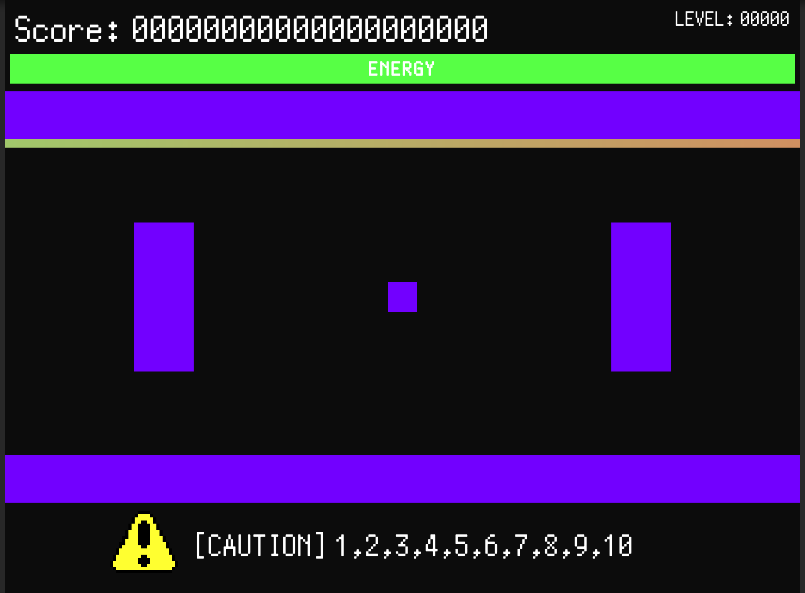

日本語/Japanese
日本語/Japanese
このチュートリアルでは、このゲームの楽しみ方を、動画や画像付きで説明していきます。
ノーマルモードのプレイの仕方
まずはメニュー画面にある「START」ボタンをクリックしてみましょう。
このような画面になりますか?

これで、ノーマルモードでゲームをプレイできます。
ブロックの意味
ゲームを開始したら、ブロックが出てきましたね。
この薄い青のブロックは、方程式ブロックです。
これを指で引っ張ってしてみましょう。
二つの数字が飛んでいきましたね。このように、飛ばすことをスワップといいます。
これは方程式の「解」です。これは数字ブロックと言われます。
二次方程式には二つの解があるため、二つの数が飛んでいきます。
(ただし重解がある場合は同じ数が飛んでいく)
これを、ステージの上の方にある虹色のラインに飛ばせばいいのです。
スコアが上がり、エネルギーが増えます。
さらに、薄い緑色の状態の数字ブロックであれば、
エネルギーやスコアが、薄い赤色の状態の数字ブロックと比べて
非常に多く増えます。しかし、方程式ブロックをスワップした直後、少しの間しか薄い緑色にならず、
少し経ったら薄い赤色のブロックになるので、
方程式ブロックを直接スワップして、エネルギーにする必要があります。
しかし、ただひたすらエネルギーにするのでは、いつかゲームオーバーになってしまうでしょう。